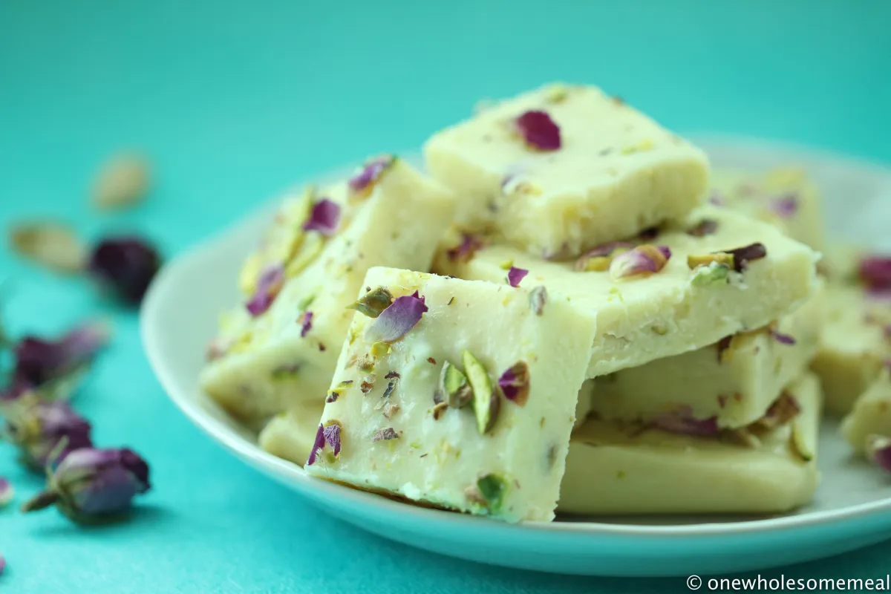

GULAB JAMUN
Ingredients:-
- 1 cup milk powder
- ¼ cup all-purpose flour (maida)
- 2 tbsp ghee (clarified butter)
- ¼ tsp baking soda
- ¼ cup milk (warm, as needed for kneading)
- 1 tsp lemon juice
- Ghee or oil (for deep frying)

Recipe:-
- Mix 1 cup milk powder, ¼ cup flour, ¼ tsp baking soda, 2 tbsp ghee, and warm milk to knead a soft dough
- Shape into balls and fry until golden
- Make syrup with 1.5 cups sugar, 1.5 cups water, cardamom, saffron, and lemon juice.
- Soak fried balls in warm syrup.
- Serve & enjoy!
BARFI
Ingredients:-
- 2 cups milk powder
- 1/2 cup condensed milk
- 1/4 cup milk
- 2 tbsp ghee
- 1/2 tsp cardamom powder
- Chopped nuts (for garnish)

Recipe:-
- Heat ghee in a pan, add milk, condensed milk, and milk powder
- Add cardamom powder and mix well
- Spread the mixture onto a greased plate, let it cool, and cut into pieces
- Garnish with nuts. Enjoy!